This section explains how to transform the coordinates of one coordinate system into the coordinates for another coordinate system one after another as your system moves through the coordinate transformation flow previously depicted (see section 3.3.7, Coordinate Transformation Flow).
To make this explanation as generic as possible, we will use numbers to identify the coordinate systems. The conversion matrix to convert from coordinate system 1 to coordinate system 2 will be depicted as 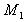, from coordinate system 2 to coordinate system 3 as 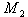, and from coordinate system 3 to that of 4 as 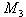.
Coordinates in each coordinate system for a point P will be depicted as 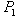, 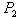, 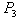, and 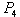.
Therefore, when you convert from one coordinate system to another in order, the following formulas apply:
Now if you substitute equation 1 for equation 2 and substitute the result for equation 3, you can get the equation for coordinate transformation from coordinate system 1 to that of 4 in a single equation:
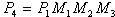 (equation 4: conversion equation from the coordinate system 1 to that of 4 in a single stretch)
A process that provides several conversions in a row like this is called a conversion synthesis. As you can see from the equations given above, a conversion synthesis involves the multiplication of conversion matrices.
Now to apply this to your game situation. Obviously, a single model has several vertices, and you need to provide an identical coordinate transformation for each vertex. However, to provide the same matrix multiplication repeatedly is inefficient. Therefore, do the matrix multiplication first. Then, use the matrix to convert from the first coordinate system to the last coordinate system at a stretch for better calculation efficiency.
For example, if:
then 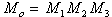 becomes the conversion matrix from coordinate system 1 to that of 4. And you can specify equation 4 using the following simple form:
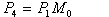
Therefore, when you actually draw an image, you can provide a single coordinate transformation calculation to convert directly from the model coordinate system to the normal screen coordinate system at a stretch without separately doing the world and view coordinate system conversions.
Remember, however, that matrix multiplication is not commutative; that is, you can't switch the order and get the same result. Therefore, when you provide the conversion by using matrices, you need to be careful of the order in which you multiply the matrices. If you multiply them in the wrong order, you get the totally different result as the following illustration shows.
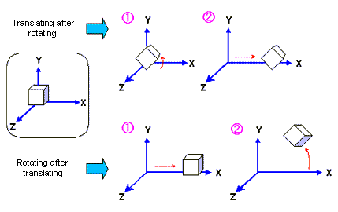
Similarly, when you provide several rotational conversions, the result is very different depending on the order of rotating axes; in other words, XYZ will give a result very different from YXZ. This is very important, you must be careful.
Note that the 3D modelers sold by various third-party companies are not standardized on the directions of axes, directions, names of axes, rotational orders, or rotational directions. Therefore, in the case of the rotation of a polygon model, you need to verify the rotational procedures used by modelers when using the output data from those modelers.
Nintendo® Confidential
Copyright © 1999
Nintendo of America Inc. All Rights Reserved
Nintendo and N64 are registered trademarks of Nintendo
Last Updated March, 1999